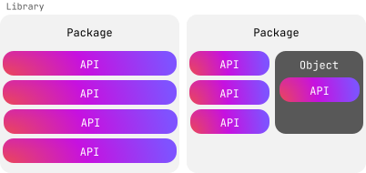

为了更加充分的利用 Kotlin, 请使用既有的库和 API, 这样你就可以将更多的时间用来编码, 花更少的时间来重新发明轮子.
库分发了可重用的代码, 简化常见任务. 库中包含了包和对象, 将相关的类, 函数, 和实用工具组织在一起. 库公开了 API (Application Programming Interface), 包含一组函数, 类, 或属性, 开发者可以在他们的代码中使用.

我们来探索一下 Kotlin 能够做到什么.
标准库
Kotlin 有一个标准库, 提供了必要的类型, 函数, 集合, 以及实用工具, 让你的代码更加简洁, 而且富有表现力. 在任何 Kotlin 文件中可以使用标准库 (everything in the kotlin 包) 的大部分内容, 不需要明确的导入:
fun main() {
val text = "emosewa si niltoK"
// 使用标准库的 reversed() 函数
val reversedText = text.reversed()
// 使用标准库的 print() 函数
print(reversedText)
// 输出结果为: Kotlin is awesome
}但是, 标准库的有些部分, 在你的代码中使用之前需要导入. 例如, 如果你想要使用标准库的时间测量功能, 你需要导入 kotlin.time 包.
请你的文件的最上方, 添加 import 关键字, 之后是你需要的包:
import kotlin.time.*星号 * 是通配符导入, 告诉 Kotlin 导入包中的所有内容. 你不能对同伴对象使用 *. 相反, 对于你想要使用的同伴对象成员, 需要明确声明.
例如:
import kotlin.time.Duration
import kotlin.time.Duration.Companion.hours
import kotlin.time.Duration.Companion.minutes
fun main() {
val thirtyMinutes: Duration = 30.minutes
val halfHour: Duration = 0.5.hours
println(thirtyMinutes == halfHour)
// 输出结果为: true
}在这个示例中:
导入
Duration类, 以及它的同伴对象中的hours和minutes扩展属性.使用
minutes属性, 将30转换为一个表示 30 分钟时间长度的Duration.使用
hours属性, 将0.5转换为一个表示 30 分钟时间长度的Duration.检查这两个时间长度是否相等, 并打印输出结果.
在构建库之前请先检索
在你决定编写你自己的代码之前, 请先检查标准库, 看看你在寻找的东西是否已经存在了. 标准库已经为你提供了很多类, 函数, 和属性, 下面是一个列表:
关于标准库中的其它内容, 请查看它的 API 参考文档.
Kotlin 库
标准库涵盖了很多常见的使用场景, 但还有一些它没有解决的情况. 幸运的是, Kotlin 开发组和社区的其它成员开发了大量的库, 来完善和补充标准库. 例如, kotlinx-datetime 能够帮助你在不同的平台上管理时间.
你可以在我们的 检索平台 找到有用的库. 要使用这些库, 你需要一些额外的步骤, 例如添加依赖项或 plugin. 每个库都有一个 GitHub 代码仓库, 包含如何将它包含到你的 Kotlin 项目的说明.
添加库之后, 你就可以导入其中的任何包. 下面是一个示例, 演示如何导入 kotlinx-datetime 包, 查找纽约的当前时间:
import kotlinx.datetime.*
fun main() {
val now = Clock.System.now() // 得到当前时刻
println("Current instant: $now")
val zone = TimeZone.of("America/New_York")
val localDateTime = now.toLocalDateTime(zone)
println("Local date-time in NY: $localDateTime")
}在这个示例中:
导入
kotlinx.datetime包.使用
Clock.System.now()函数, 创建Instant类的一个实例, 其中包含当前时间, 并将结果赋值给now变量.打印输出当前时间.
使用
TimeZone.of()函数, 找到纽约的时区, 并将结果赋值给zone变量.在包含当前时间的实例上调用
.toLocalDateTime()函数, 使用纽约的时区作为参数.将结果赋值给
localDateTime变量.打印输出针对纽约的时区调整后的时间.
对 API 选择使用者同意(Opt-in)
库的作者可能会对某些 API 标记为, 在你的代码中使用之前, 需要使用者同意(Opt-in). 当 API 还处于开发阶段, 未来可能发生变化时, 通常会这样做. 如果你不进行用者同意(Opt-in), 你会看到类似这样的警告或错误信息:
This declaration needs opt-in. Its usage should be marked with '@...' or '@OptIn(...)'要选择使用者同意(Opt-in), 请标注 @OptIn, 之后是括号, 括号之内是对 API 进行分组的类名称, 之后是 2 个冒号 :: 和 class.
例如, 标准库的 uintArrayOf() 函数属于 @ExperimentalUnsignedTypes, 如 API 参考文档 所示:
@ExperimentalUnsignedTypes
inline fun uintArrayOf(vararg elements: UInt): UIntArray在你的代码中, 使用者同意(Opt-in)大致如下:
@OptIn(ExperimentalUnsignedTypes::class)下面是一个示例, 对使用 uintArrayOf() 函数选择使用者同意(Opt-in), 创建一个无符号整数的数组, 并修改其中一个元素:
@OptIn(ExperimentalUnsignedTypes::class)
fun main() {
// 创建一个无符号整数的数组
val unsignedArray: UIntArray = uintArrayOf(1u, 2u, 3u, 4u, 5u)
// 修改一个元素
unsignedArray[2] = 42u
println("Updated array: ${unsignedArray.joinToString()}")
// 输出结果为: Updated array: 1, 2, 42, 4, 5
}这是选择使用者同意(Opt-in)的最简单的方法, 但也有其它方法. 详情请参见 明确要求使用者同意的功能.
实际练习
习题 1
你正在开发一个金融应用程序, 帮助使用者计算他们的投资的未来价值. 计算复利的公式是:
其中:
A是计算利息后的累计金额 (本金 + 利息).P是本金 (初始投资额).r是年利率 (小数).n是每年计算复利的次数.t是投资时间 (年).
请更新代码:
从
kotlin.math包 导入必要的函数.向
calculateCompoundInterest()函数添加函数体, 计算应用复利后的最终金额.
// 请在这里编写你的代码
fun calculateCompoundInterest(P: Double, r: Double, n: Int, t: Int): Double {
// 请在这里编写你的代码
}
fun main() {
val principal = 1000.0
val rate = 0.05
val timesCompounded = 4
val years = 5
val amount = calculateCompoundInterest(principal, rate, timesCompounded, years)
println("The accumulated amount is: $amount")
// 输出结果为: The accumulated amount is: 1282.0372317085844
}参考答案
import kotlin.math.*
fun calculateCompoundInterest(P: Double, r: Double, n: Int, t: Int): Double {
return P * (1 + r / n).pow(n * t)
}
fun main() {
val principal = 1000.0
val rate = 0.05
val timesCompounded = 4
val years = 5
val amount = calculateCompoundInterest(principal, rate, timesCompounded, years)
println("The accumulated amount is: $amount")
// 输出结果为: The accumulated amount is: 1282.0372317085844
}习题 2
你想要测量在你的程序中执行多个数据处理任务消耗的时间. 请更新代码, 加入正确的导入语句, 以及 kotlin.time 包中的正确的函数:
// 请在这里编写你的代码
fun main() {
val timeTaken = /* 请在这里编写你的代码 */ {
// 模拟某些数据处理
val data = List(1000) { it * 2 }
val filteredData = data.filter { it % 3 == 0 }
// 模拟处理过滤后的数据
val processedData = filteredData.map { it / 2 }
println("Processed data")
}
println("Time taken: $timeTaken") // 例如: 16 ms
}参考答案
import kotlin.time.measureTime
fun main() {
val timeTaken = measureTime {
// 模拟某些数据处理
val data = List(1000) { it * 2 }
val filteredData = data.filter { it % 3 == 0 }
// 模拟处理过滤后的数据
val processedData = filteredData.map { it / 2 }
println("Processed data")
}
println("Time taken: $timeTaken") // 例如: 16 ms
}习题 3
在最新的 Kotlin 发布版中, 标准库中有一个新的功能. 你想要试用这个功能, 但它要求使用者同意. 这个功能属于 @ExperimentalStdlibApi. 那么你的代码中, 选择使用者同意的代码应该是什么样的?
参考答案
@OptIn(ExperimentalStdlibApi::class)下一步做什么?
恭喜你! 你已经完成了中级教程! 欢迎 分享你的阅读体验.
下一步, 请查看我们针对流行的 Kotlin 应用程序的教程:
从头创建一个针对 Android 和 iOS 的跨平台应用程序, 并且: